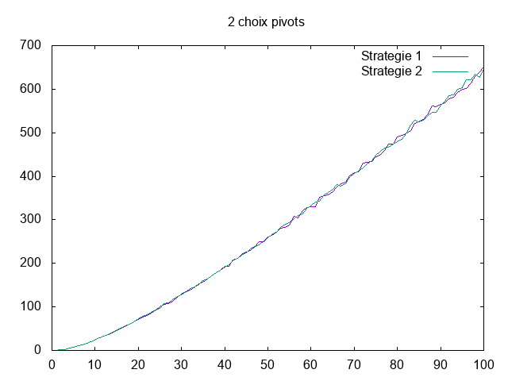
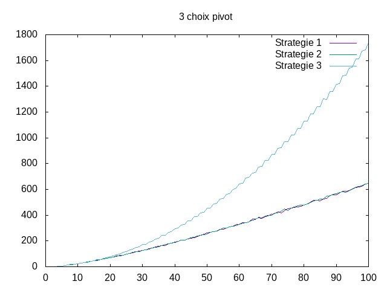

Quicksort¶
Etat du TP¶
Décrivez ici l’état d’avancement du TP.
Réponses aux questions¶
Question 2.2.1¶
D’autres tris sur place seraient par exemple le tri fusion ou le tri par insertion lorsqu’on echange deux valeurs.
Question 2.2.2¶
Pour partitionner un tableau sans avoir à utiliser de l’espace mémoire supplémentaire , il faut faire des échanges d’éléments.
Question 2.2.3¶
On peut vérifier que chacun des éléments à gauche du pivot sont bien inférieurs au pivot.
Question 2.2.8¶
En prenant chaque initialisation de variable, pour la partition on a 6 unités de mémoire. On utilise donc 6 unités de mémoire pour le tri rapide.
2.3. Sélection du pivot¶
Le nombre de comparaisons des deux choix est presque le même, on est à une ou deux comparaisons près en moyenne. Si n = 1, on fait 0 comparaisons sinon On est donc en O(n²) dans le pire des cas si on prend toujours un pivot minimum ou maximum ce qui nous donnerait C(n) = 1 + C(0) + C(n-1)
Théoriquement, la meilleure valeur pour le pivot c’est la valeur au milieu.
Voici les deux premières façons de choisir le pivot. Le graphique suivant nous montre les 3 façons mais il y a un problème avec la 3e façon, les données devraient être en dessous des autres courbes.
C(n) = 1 + C(n/2) + C((n-1)/2) La complexité en temps est O(nlog n).
En comptant le nombre de comparaisons du choix du pivot, il vaut mieux choisir aléatoirement le pivot (ou prendre le premier de la liste).